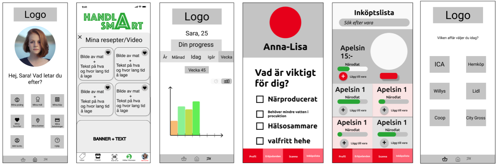
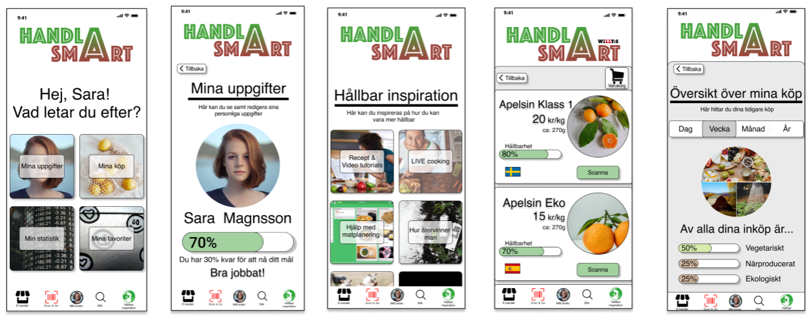
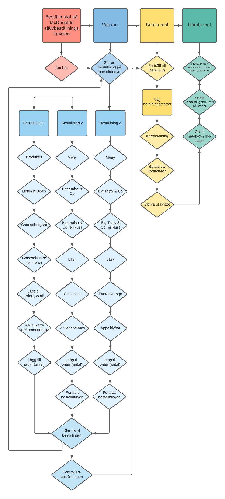

.png)
Välkommen till Hildas Portfolio
UX-Designer med kravkompetens
Nyfiken på vad jag har gjort tidigare?
Nyfiken på vad jag har gjort tidigare?
Matindustrin är vinstbaserad och därför är inte informationen kring livsmedel transparent på mataffärer. Informationen är vinklad i syfte att få kunden att köpa mer produkter istället för att informera kunden om dess hållbara val.
UX Designer, UI Designer, intervjufaciliterare, workshopfaciliterare, voiceover.
Semistrukturerade intervjuer, sitekarta, affinity mapping, flödesschema, workshop, Lo Fi och Hi Fi prototyp, konceptformulering, beteendetyper, behovskarta, scenariobaserade användartester, analys.
Att förstå vad konsumenten behöver för att göra hållbara livsmedelsköp är utmanande då information kring varor är begräsad. Det finns ett intresse av en applikation där tydlig, transparant och hållbar information delas på ett lättillgängligt sätt. Applikationen möjliggör därför en hållbar livsmedelskonsumtion.
Projektet har potential att påverka men att det kommer vara en lång process att få alla mataffärer att sammarbeta. Med det sagt, superviktigt och roligt att få konsumenten mer engagerad i sina aktiva val.


I dagsläget finns det ett gap mellan en individs förutsättningar, förmågor och med den digitala miljön. För att göra ett digital miljö användarvänlig har en internationell standard formulerats vars namn idag är WCAG 2.1 (web content accessibility guidelines).
Kravinsamlingens analys har använt 2 stycken utvärderingsmetoder: Lighthouse i Chrome och Funkify Disability Simulator.
Det nya tillgänglighetsdirektivet kommer bidra till en förändring av digitala produkter och tjänster när lagen träder fram. Detta kommer att skapa utmaningar för webbsidor som Willys.se som bryter mot många av dagens acceptanskriterier.
Baserat på rapportens analys kan jag konstatera att Willys.se har stora förbättringsområden. I framtiden är det aktuellt att utvärdera Willys.se mer utförligt genom workshops där målgruppen blir observerade och intervjuade i kombination för att generera ännu fler krav. Deltagare i detta fall är exempelvis; blinda, kognitivt nedsatta, synnedsatta eller motorisk nedsatta konsumenter.
Genom att utvärdera Willys.se kan jag konstatera att det är viktigt att tidigt göra en grundläggande kravinsamling och ta del av användarna under skapelseprocessen. Att inkludera användaren leder till ett tillgängligt system som inte exkluderar.
A study on the game Mobile Flagship.
The participant is not able to understand the placement of the four bonus games. The participant doesn’t understand how to go forward to the next bonus game.
When the participant had 1 key each took it a while for them to scan and see the hole page. They selected the right game but it should be more prominent to bring more focus to it.
When the participants had around 3 keys each they start to understand that something is locked and they start to see the dots more and more. In this stage, they start to understand what’s going on and start to collected they’re last key. This means that the dot function doesn’t represent the keys in the right way. The link between the key and the dot is unclear.
Thought the dots though it would be impassable to know the placement of the second bonus game. The dots were the only thing that show the participant what order the choose the right bonus game. It should be more visible what the dots is if it was represented in another way.
The spiral in the main game is a fun idea, special when you have a goal; get the key in the middle. One of the participant where missing that goal- feature in the first bonus game but still liking the spiral. Another feature that was unclear where; wat is it around the key in the main game?
Ett flödesschema på 3 stycken beställningar på McDonalds.
Kraften i ett flödesschema är att illustrera kundvägen vid uppbyggnaden av ett system på ett visuellt sätt.
